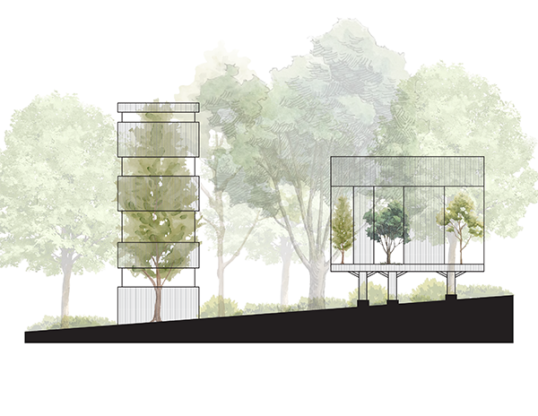
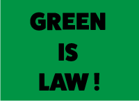

Project 1: Refined Routes (Interactive Narrative)
Mountain Peaks
Ocean Beach
Ocean Beach
Project 1: Refined Routes (Interactive Narrative)

Full Project
Overview
This is a class assignment that required us to collect photos that tell a story. I decided to use photos of routes I often walk through or enjoy. This project is supposed to serve as an interactive narrative that allows users to gain a deeper understanding of each photo I put on display.
Process
I decided to create a project that illustrates a part of my daily life, since the routes I photographed are the ones I usually walk to get home, to class, or to shopping plazas. I wanted a project that highlighted pathways and their importance since they help people get from one place to another. I picked out photos that displayed streets, walkable pathways, and sidewalks because I wanted to display versatile routes and how these routes are useful for pedestrians, automobiles, bikes, etc.